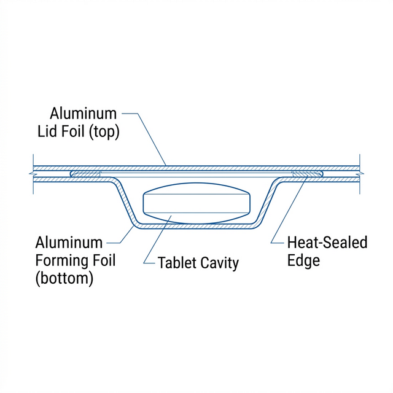

This document presents the official response to the regulatory questions issued by the health authority. It provides detailed evidence, justifications, and technical data in a structured format that maintains full traceability to the original request and the CTD structure.
Global Regulatory Strategy
Basel, Switzerland
john.doe@synthpharma.example
Regulatory Affairs Division
regulatory.contact@example-nra.example.org
Yes, the fee was paid on June 25, 2025. Payment confirmation and receipt are included in the application form (see Section 1.1).
Yes, all required metadata fields are complete:
- MAH: SynthPharma AG
- Product: ExampleDrug 10 mg Tablets
- Procedure: NRA/H/C/005432/II/0023
- Submission Date: 2025-06-25
No additional patient guidance is required. The ePI clearly states: "Store in a refrigerator (2°C – 8°C). Do not freeze." The 36-month shelf life is supported by stability data.
Yes, the patient leaflet has been updated to state: "Shelf life after first opening: 36 months when stored at 2–8°C". The revised leaflet is included in the submission.
Yes, all test methods are consistent with the previously approved dossier. No changes have been made to the analytical procedures. Full validation data per ICH Q2(R1) is available on request.
No new degradation products have been identified. All impurities remain below the 0.10% reporting threshold per ICH Q3B(R2). Batch analysis data is included in Section 3.2.P.5.4.
Yes, the packaging was changed from PVC/PVDC to Alu/Alu. New stability studies were initiated and stored under standard conditions.

| Parameter | Original | New |
|---|---|---|
| Material | PVC/PVDC | Alu/Alu |
| Storage | 25°C/60% RH | Unchanged |
The submission includes both extended long-term data (36 months) for primary batches and new studies for pilot-scale batches in Alu/Alu packaging. No protocol deviations occurred.
Yes, all batches remain within specification across all ICH climatic zones, including Zone IVb (30°C/75% RH). Full tabulated data is provided in Section 3.2.P.8.3.